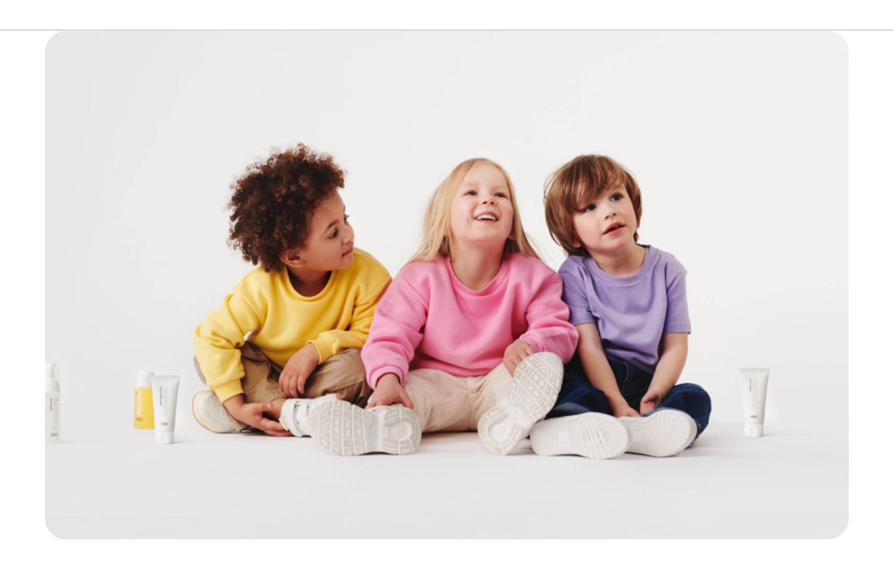

RINGANA, la marca austriaca pionera en cosmética fresca, vegana y sostenible con presencia en 36 países, presenta la nueva línea FRESH baby, diseñada especialmente para el cuidado de los más pequeños del hogar.
FRESH baby es una línea totalmente novedosa pensada para bebés y niñ@s de 0 a 4 años, que siguiendo la filosofía de RINGANA, está compuesta por tres productos frescos, naturales y veganos, desarrollados con la mayor calidad e ingredientes ecológicos certificados: FRESH baby bum cream, FRESH baby bum foam y FRESH baby oil.
RINGANA nació en 1996 con la convicción de crear un mundo mejor. Todo comenzó cuando
Ulla Wannemacher y Andreas Wilfinger descubrieron que la pasta de dientes de su hijo
contenía triclosán, una sustancia potencialmente nociva. Esta experiencia los motivó
a desarrollar alternativas más seguras y naturales. Con FRESH baby, regresan a sus
raíces con una línea para bebés y niños pequeños.
“El cuidado de bebés y niños pequeños es un tema especialmente sensible, que abordamos
con máximo rigor y respeto. Una madre o padre solo desean dar lo mejor a sus hijos;
lo digo por experiencia propia. Por este motivo, hemos desarrollado FRESH baby con
el máximo esmero a lo largo de todo el proceso”, señala Ulla Wannemacher, directora
ejecutiva de RINGANA.
No fluff - no fillers: RINGANA FRESH baby
Toda la línea, al igual que el resto de los productos de RINGANA, es vegana y libre de colorantes, fragancias y conservantes sintéticos, así como de aceites minerales, parabenos y emulsionantes PEG. Además, todos los productos han sido avalados por ensayos dermatológicos.
FRESH baby bum cream, calma y protege de forma suave
La fórmula ayuda a calmar irritaciones y enrojecimientos en la delicada piel del
bebé en la zona del pañal, previniendo rozaduras y aportando alivio de la mano de
los extractos de hamamelis y algodón. Asimismo, refuerza la barrera dérmica y forma
una película transpirable en la piel. Los aceites naturales de almendra, sésamo y
jojoba procedentes de cultivo ecológico, estimulan la regeneración de la piel.
La FRESH baby bum cream se puede usar después de cada cambio de pañal para prevenir
erupciones en la zona del pañal.
$249 MXN | 50 ml
FRESH baby bum foam, la alternativa ecológica a las toallitas
Su innovadora fórmula limpia suavemente y en profundidad la sensible piel del
bebé en la zona del pañal. Las sustancias activas calmantes, como los extractos
de hamamelis y algodón, aportan un cuidado eficaz de la piel sensible. Aplicada
en un paño de tejido suave y lavable, la FRESH baby bum foam es una alternativa
excelente a las toallitas y también se puede usar para las manos y el rostro
del bebé. No es necesario enjuagar.
$229 MXN | 50 ml
FRESH baby oil, todo un multitalento
Ya sea para el cuidado diario de la piel, un relajante masaje para el bebé o
una limpieza suave, el FRESH baby oil ha sido desarrollado para las necesidades
de su piel, que tiende fácilmente a secarse y deshidratarse. Su combinación única
de aceites de sésamo, jojoba, almendra y onagra de cultivo ecológico y alta
calidad cuidan y regeneran su piel. Los extractos de avena y vainilla son
calmantes y antioxidantes. También es ideal para adultos.
$199 MXN | 50 ml
Fresco, natural y puro
RINGANA ha mantenido siempre su compromiso con la sostenibilidad y eficacia, creando un cuidado natural ideal para el bebé. Esta línea ha sido desarrollada con esmero para proteger la piel sensible de los pequeños, utilizando aceites y extractos vegetales de alta calidad. Además, RINGANA FRESH baby cuenta con el certificado COSMOS organic, libre de fragancias alergénicas y contiene un exclusivo extracto de células de algodón para calmar la piel.
“La piel de un bebé es de tres a cinco veces más fina que la piel adulta. Además, la función protectora todavía no está completamente desarrollada, por lo que se seca más deprisa y permite una penetración más fácil de sustancias nocivas”, explica Andrea Haidinger, desarrolladora superior de productos de cosmética ecológica y fresca de RINGANA.
Menos es más, pero en máxima calidad
La sensible y delicada piel de los bebés y niños pequeños solo necesita de pocos productos de cuidado personal. Es muy importante utilizar solamente aquellos desarrollados específicamente para sus necesidades.
“Consideramos fundamental mantener una gama reducida de productos para enfocarnos en lo esencial. Con estos tres productos de pureza máxima, formulados con ingredientes seleccionados a mano y estudiados a fondo, cubrimos todo lo que la piel sensible del bebé y del niño realmente necesita”, comenta Andreas Wilfinger, CEO de RINGANA.